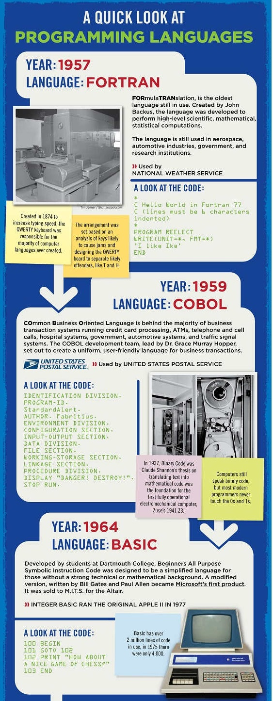
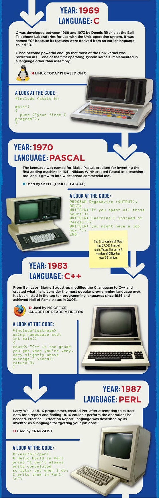
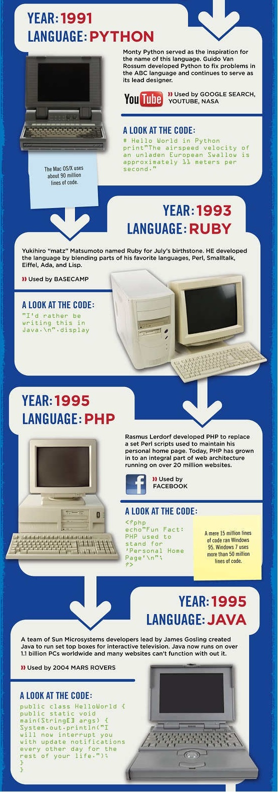

最近看完了vb.net的视频，深感微软公司的强悍，也许它不是某个领域的试水者，但是它能先人一步看到未来，创造者固然伟大，但是看到某个创造的未来，并实现的人才是伟人！
跨平台，通用代码，中间代码，面向对象，这一切放到vb.net身上都很贴切，我还没有学习java，在这里只是谈谈现在我所认识的vb.net！
认识某种语言的好处，并不能根据现在来说，说他必然要放到历史中，Rackspace公司发布了一张编程语言演变的数据图表，看看这张图，起码能知道我们现在敲几个字母就ok的程序，前人都经历了那些！
简而言之，vb.net给我的感觉就是，虽然我还是个面向对象编程的菜鸟，但是它让我有信心，我能进入到面相对象的世界中去。
老师常说，心有多大，世界就有多大，vb.net又是这句话的一个有效例证！当初的研发是为了什么，大家想想！答案很意料之外，我个人的预测是微软在当初研发vb.net的时候肯定意识到一个严重的问题，windows操作系统并不能长盛不衰，任何事物都有其发展规律，如何研发一种语言，或者跟随某种潮流，脱离于系统，独立存在！
vb.net因此而生，它既是为了提升微软公司的竞争力而生，也是为了windows操作系统的后继而生，上世纪90年代，微软预期2011年windows操作系统也许会被其他操作系统取代，或者自己的对手平分秋色，今天看来，微软的预期估计要延后一段时间，但是操作系统以及操作习惯已经和那时发生了极大的改变！
正是因为微软极强危机感，以及对未来趋势准确地把握，让它在这个多变的世界生存，并且生存的很好！
这边文章是我对微软和vb.net的一些初步的认识和理解，欢迎大家交流！


